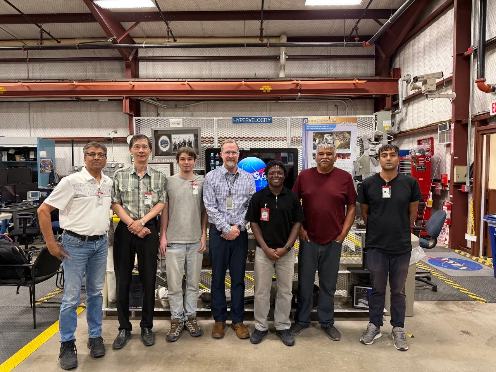

BIMM Lab’s work is carried out in partnership with investigators, institutions, and agencies across the country. Much of this network centers on AQUASHIELD: Biomimetic Fluid-Filled Composites for Integrated Water Storage and Habitat Protection in Space, a NASA EPSCoR–funded, multi-institutional project led by New Mexico Tech (Science PI: Dr. Ashok Ghosh) alongside New Mexico State University, the University of New Mexico, the University of Illinois at Urbana-Champaign, NASA centers, national laboratories, and industry partners.
University of New Mexico
UNM leads the computational and simulation side of AQUASHIELD, modeling fluid-filled porous networks under microgravity conditions to validate experimental results from drop tower and magnetic levitation testing.
Dr. Yu-Lin Shen
Co-Principal Investigator
Department of Mechanical Engineering — University of New Mexico
Fellow of ASME and PNM Endowed Chair for Renewable Energy Research at UNM; leads computational modeling of fluid-filled porous networks under microgravity conditions. Recognized among the top 2% most influential scientists globally, with 159 published papers.
Ushnik Ghosh
Ph.D. Student — Computational Modeling
University of New Mexico
Leads computational modeling using StarCCM+ at UNM’s Center for Advanced Research Computing to optimize pore geometries, predict surface tension-driven flow patterns, and characterize thermal transport through composite layers, validating results against drop tower test data.

Project Leadership
Dr. Paulo Oemig
Administrative Principal Investigator
Director, New Mexico Space Grant Consortium & New Mexico NASA EPSCoR — New Mexico State University
Brings extensive experience managing NASA EPSCoR projects, including ten active awards totaling more than $3M across New Mexico’s space technology priorities.
Co-Investigators
Dr. Ronald Noebe
Senior Technologist
NASA Glenn Research Center
Provides materials processing and characterization expertise, and serves on student dissertation committees.
Dr. Cheol Park
Senior Researcher, Advanced Materials and Processing Branch
NASA Langley Research Center
Supports advanced fluid-filled composite property testing and characterization.
Dr. Iwona Jasiuk
Professor, Mechanical Science and Engineering
University of Illinois at Urbana-Champaign
Advises on bone-inspired design optimization, trabecular architecture characterization, and structure-property relationships.
NASA, National Lab & Industry Collaborators
Darren Cone
Manager, Remote Hypervelocity Test Laboratory
NASA White Sands Test Facility
Provides access to hypervelocity impact testing capabilities for micrometeoroid and orbital debris (MMOD) validation.
John McQuillen
Technical Advisor for Zero-Gravity Testing
NASA Glenn Research Center
Adds microgravity testing expertise, including guidance on NASA Glenn’s drop tower facility.
Niccoli N. Scalice
Thrust Lead, Deployable Structures Program
Air Force Research Laboratory
Provides access to specialized testing facilities through an Educational Partnership Agreement between AFRL and New Mexico Tech.
Dr. Sudeep Mitra
Manager, Geophysical Detection Programs
Sandia National Laboratories
Contributes radiation testing expertise and space radiation environment modeling.
Jacob Moulton
Technical Representative
Redwire Space / LoadPath
Brings 15 years of collaboration history with New Mexico Tech and expertise in spacecraft thermal management systems.
Partner Institutions
- New Mexico Institute of Mining and Technology (Lead Institution)
- New Mexico State University
- University of New Mexico
- University of Illinois at Urbana-Champaign
- NASA Glenn Research Center
- NASA Langley Research Center
- NASA White Sands Test Facility
- Air Force Research Laboratory
- Sandia National Laboratories
- Redwire Space